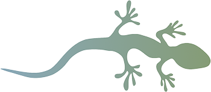

Salamander Watch
Take a photo
Migration Orientation
Life Status
Traffic Conditions
Tunnel Use
Additional Field Notes
Additional Field Notes (Optional)
Notes about field conditions, other organisms, or any human activity you notice while collecting data